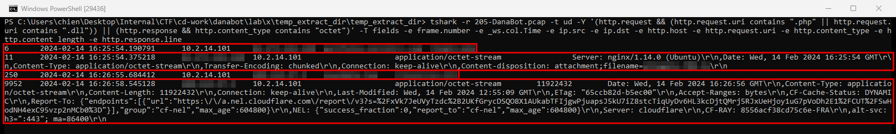
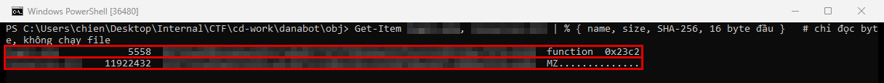
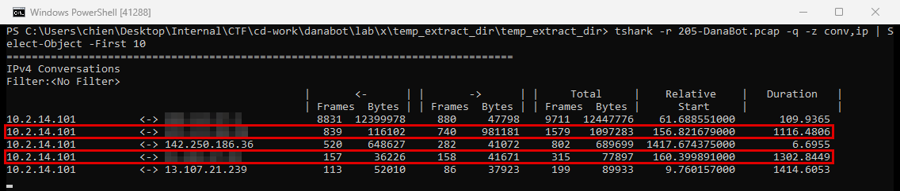

DanaBot
- Lab: DanaBot trên CyberDefenders. Nhóm Network Forensics, độ khó Easy, đã retired.
- Dữ liệu: một file pcap (bản ghi lưu lượng mạng, 15 MB) của máy trạm Windows
10.2.14.101, ghi trong khoảng 24 phút ngày 14/02/2024. - Công cụ:
tshark(bản dòng lệnh của Wireshark) để lọc và trích file từ HTTP, Python để tính hash. Không chạy file nào. VirusTotal hoặc ANY.RUN để tra hash và xem cây tiến trình. - Quy ước:
- Giờ trong pcap là UTC. Mốc chính ghi dạng
UTC (UTC+7). - Khung đỏ trên ảnh là chỗ cần chú ý.
- Vùng làm mờ là giá trị trùng với đáp án của lab: IP, tên miền, URI, tên file, hash.
Tóm tắt kết quả
- Máy trạm tải một file JavaScript bị làm rối mã (obfuscated) qua HTTP từ một tên miền dynamic DNS (dịch vụ DNS cho phép đổi IP liên tục). Máy chủ trả file về dạng tệp đính kèm, tên file giả hóa đơn tiếng Ý.
- Khoảng một phút sau, máy tải một file PE (file thực thi Windows) dạng thư viện, nặng gần 12 MB, từ một tên miền và IP khác.
- Sau đó máy mở các kết nối kéo dài hơn 18 phút tới hai IP bên ngoài qua cổng 443. Với một IP, máy trạm gửi đi gần 1 MB.
- Payload giai đoạn hai được VirusTotal gán vào họ DanaBot, một trojan ngân hàng có khả năng đánh cắp thông tin đăng nhập.
Bước 1: các request HTTP và file tải về
- Mục tiêu: xác định nơi máy tải file độc hại.
- Cách làm: lọc request HTTP, bỏ multicast SSDP, OCSP và kiểm tra kết nối mạng của Windows. Sau đó xem phản hồi từ hai máy chủ còn lại, gồm cả header
Content-Disposition.
tshark -r DanaBot.pcap -t ud -Y "http.request && ip.dst!=239.255.255.250" -T fields -e frame.number -e _ws.col.Time -e ip.src -e ip.dst -e http.host -e http.request.uri
tshark -r DanaBot.pcap -Y "http.response && (ip.src==<IP 1> || ip.src==<IP 2>)" -T fields -e frame.number -e http.response.code -e http.content_type -e http.content_length_header -e http.response_for.uri -e http.response.line

- Nhận định:
- URI kết thúc bằng
.phpnhưng máy chủ trả về file đính kèm. Đây là cách giấu file độc sau một URL trông như trang web. - Tên miền thứ nhất thuộc một dịch vụ dynamic DNS miễn phí. Kẻ tấn công hay dùng loại này để đổi IP mà không cần đổi tên miền.
- Hai file đến từ hai IP khác nhau. Chặn một IP không đủ để cắt chuỗi lây nhiễm.
- Hướng giải: IP nguồn phát tán file đầu nằm ở cột
dstcủa frame 6. Tên file nằm saufilename=trong header của frame 11.
Bước 2: trích file và tính hash
- Mục tiêu: lấy file script và payload để tra cứu.
- Cách làm: trích object HTTP bằng
tshark --export-objects, đọc vài byte đầu và tính SHA-256 bằng Python.

- Nhận định:
- Nội dung file đầu là JavaScript bị làm rối, không phải trang PHP. Tên file giả dạng tài liệu đính kèm bằng tiếng Ý để người nhận mở ra.
- Hướng giải: SHA-256 của file script tính trên object thứ nhất. MD5 của payload tính trên object thứ hai.
Bước 3: tiến trình chạy script
- Mục tiêu: xác định tiến trình Windows chạy file script.
- Cách làm: pcap không có thông tin tiến trình. Tra hash file script trên VirusTotal hoặc ANY.RUN, xem cây tiến trình trong báo cáo sandbox.
- Nhận định:
explorer.exegọi trình thông dịch script có sẵn của Windows với tham số là file.js, tức người dùng bấm đúp vào file. Đây là cách lạm dụng binary có sẵn của hệ thống (LOLBin).- Hướng giải: tên file thực thi nằm trong cây tiến trình của báo cáo sandbox, ngay dưới
explorer.exe.
Bước 4: payload giai đoạn hai và kết nối sau đó
- Mục tiêu: xác định loại payload và hoạt động mạng sau khi tải.
- Cách làm: tra hash payload trên VirusTotal. Xem thống kê hội thoại theo IP trong pcap.

- Nhận định:
- Payload là thư viện Windows. VirusTotal gán vào họ DanaBot.
- Hai luồng này bắt đầu ngay khi việc tải payload sắp xong, đều qua cổng 443.
- Với IP thứ nhất,
conv,tcpcho thấy 4 phiên TCP: phiên đầu dài 20 giây, máy trạm gửi đi khoảng 960 KB. Sau đó là 3 phiên ngắn, mỗi phiên khoảng 11 KB, cách nhau khoảng 6 phút. Nhịp đều đặn như vậy là kiểu beacon (kết nối định kỳ về máy chủ C2). - Lượng gửi đi gần 1 MB là bất thường với một máy trạm vừa bị nhiễm: nguồn là pcap, máy
10.2.14.101, lúc 16:28:30 UTC (23:28:30 UTC+7), so với các IP bên ngoài khác chỉ nhận vài chục KB từ máy này. - Chưa đủ dữ liệu để kết luận đó là dữ liệu bị đánh cắp, vì lưu lượng qua cổng 443 không giải mã được và lab không có memory dump hay log endpoint.
- Hướng giải: loại file xem ở byte đầu (MZ) và tab Details trên VirusTotal. MD5 tính trên object thứ hai.
Dòng thời gian
- 14/02/2024 16:25:54 UTC (23:25:54 UTC+7): máy tải file JavaScript giả hóa đơn từ tên miền dynamic DNS. Nguồn: pcap, frame 6 và 11.
- 16:26:55 UTC (23:26:55 UTC+7): máy tải file DLL gần 12 MB từ tên miền thứ hai. Nguồn: pcap, frame 250 và 9952.
- 16:28:30 và 16:28:34 UTC (23:28 UTC+7): bắt đầu hai kết nối dài tới hai IP bên ngoài qua cổng 443. Nguồn: pcap.
- Khoảng 16:47 đến 16:50 UTC (23:47 đến 23:50 UTC+7): hai kết nối trên kết thúc. Nguồn: pcap.